Chapter 4 Spatial Analysis
Now let’s do some analysis with the data we’ve acquired already:
- Sites point data
sites_sf - Utah interstates
interstate_sf_proj
We also have some data that I’ve included in the exercises portion of the “worksheet”: a different elevation + snow raster stack (this one is in the NW corner of Utah),
## class : SpatRaster
## dimensions : 240, 240, 3 (nrow, ncol, nlyr)
## resolution : 0.008333333, 0.008333333 (x, y)
## extent : -112, -110, 40, 42 (xmin, xmax, ymin, ymax)
## coord. ref. : lon/lat WGS 84 (EPSG:4326)
## source : elev_snow_nw_stack.tif
## names : elevation, swe, snow_depth
## min values : 1280.021, 0, 0
## max values : 4087.231, 1108, 3196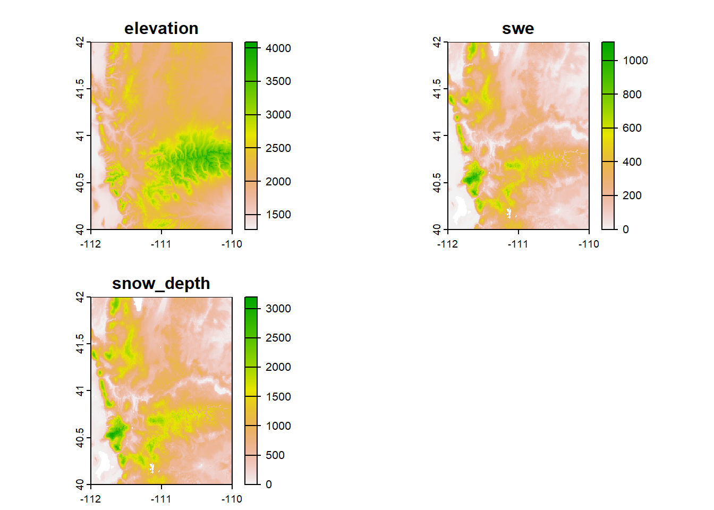
a set of plots as a point feature,
## Simple feature collection with 6 features and 1 field
## Geometry type: POINT
## Dimension: XY
## Bounding box: xmin: -111.6469 ymin: 40.40336 xmax: -110.4603 ymax: 41.81642
## Geodetic CRS: WGS 84
## Plots geometry
## 1 A POINT (-111.5881 40.53102)
## 2 B POINT (-111.6469 40.74425)
## 3 C POINT (-110.626 41.14571)
## 4 D POINT (-111.2318 41.81642)
## 5 E POINT (-110.4603 40.40336)
## 6 F POINT (-111.0046 41.79678)and a polygon feature of land management boundaries in Utah
ownership_sf <- st_read("Data/Exercises/UT_land_ownership", quiet = T) %>%
st_transform(crs = 26912)## Simple feature collection with 6 features and 5 fields
## Geometry type: MULTIPOLYGON
## Dimension: XY
## Bounding box: xmin: 388066 ymin: 4410117 xmax: 403492.2 ymax: 4414856
## Projected CRS: NAD83 / UTM zone 12N
## OBJECTID OWNER AGENCY ADMIN DESIG geometry
## 1 2974453 Federal BLM BLM Bankhead Jones MULTIPOLYGON (((388854 4411...
## 2 2974454 Federal BLM BLM Bankhead Jones MULTIPOLYGON (((394528.1 44...
## 3 2974455 Federal BLM BLM Bankhead Jones MULTIPOLYGON (((388473.6 44...
## 4 2974456 Federal BLM BLM Bankhead Jones MULTIPOLYGON (((399793.3 44...
## 5 2974457 Federal BLM BLM Bankhead Jones MULTIPOLYGON (((389300.1 44...
## 6 2974458 Federal BLM BLM Bankhead Jones MULTIPOLYGON (((403492.2 44...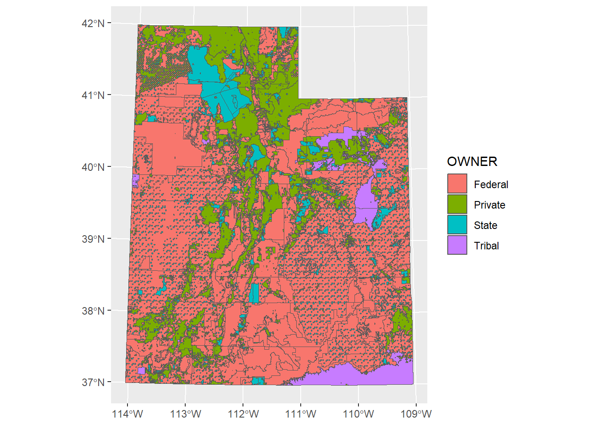
Let’s plot one of the rasters with our sites point vector and Utah highways line vector. To plot just one raster layer in a stack we can either index it with double brackets or with the name:
## class : SpatRaster
## dimensions : 240, 240, 1 (nrow, ncol, nlyr)
## resolution : 0.008333333, 0.008333333 (x, y)
## extent : -112, -110, 40, 42 (xmin, xmax, ymin, ymax)
## coord. ref. : lon/lat WGS 84 (EPSG:4326)
## source : elev_snow_nw_stack.tif
## name : elevation
## min value : 1280.021
## max value : 4087.231## class : SpatRaster
## dimensions : 240, 240, 1 (nrow, ncol, nlyr)
## resolution : 0.008333333, 0.008333333 (x, y)
## extent : -112, -110, 40, 42 (xmin, xmax, ymin, ymax)
## coord. ref. : lon/lat WGS 84 (EPSG:4326)
## source : elev_snow_nw_stack.tif
## name : elevation
## min value : 1280.021
## max value : 4087.231## Reading layer `utah_interstate' from data source
## `C:\Users\RonanHart\Documents\Projects\R_Spatial_Visualization_Workshop\Data\Examples\utah_interstate'
## using driver `ESRI Shapefile'
## Simple feature collection with 1848 features and 9 fields
## Geometry type: LINESTRING
## Dimension: XY
## Bounding box: xmin: -114.0437 ymin: 37.00002 xmax: -109.0513 ymax: 42.00117
## Geodetic CRS: WGS 84plot(elev_snow_stk$elevation)
plot(st_geometry(interstate_sf), lwd = 2, add = TRUE) # add = TRUE will add other elements to the plot without erasing previous elements and creating a new plot
plot(st_geometry(sites_sf), pch = 16, add = TRUE)
plot(st_geometry(plots_sf), pch = 3, add = TRUE)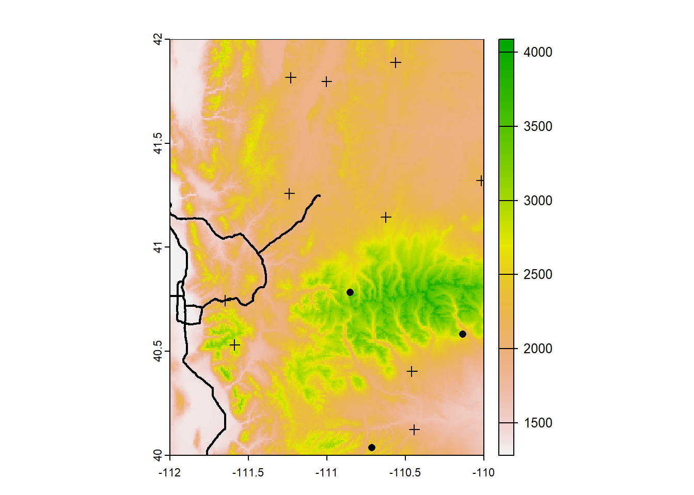
(This can also be done with ggplot using as.data.frame)
elev_snow_stk$elevation %>%
as.data.frame(xy = T) %>%
ggplot() +
geom_raster(aes(x = x, y = y, fill = elevation)) +
scale_fill_gradientn(colors = rev(terrain.colors(10))) +
geom_sf(data = interstate_sf) +
geom_sf(data = sites_sf) +
geom_sf(data = plots_sf, shape = 3) +
coord_sf(datum = 4326) +
xlim(ext(elev_snow_stk)[c(1,2)]) +
ylim(ext(elev_snow_stk)[c(3,4)])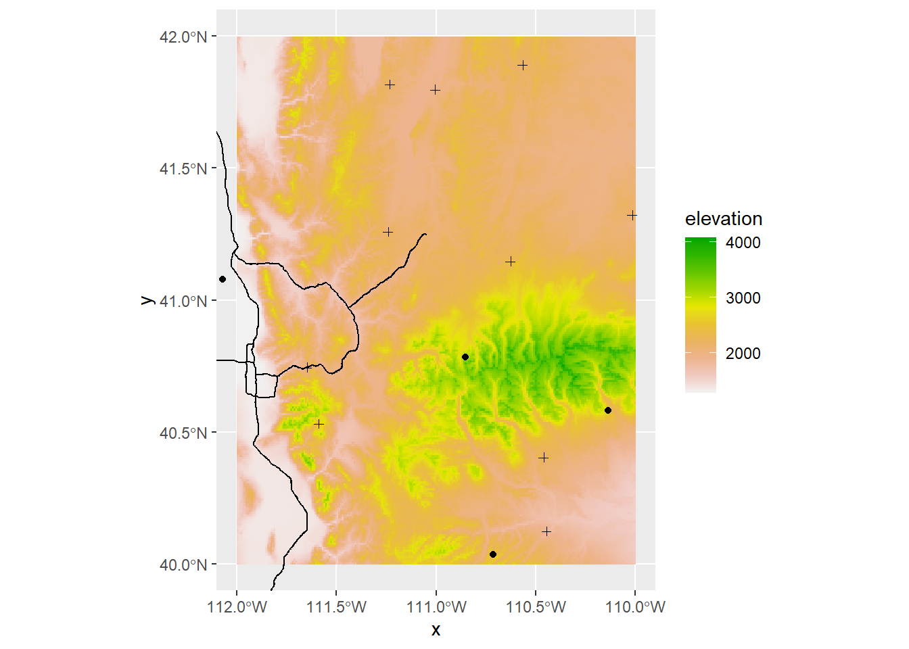
Let’s start on some analysis and computations that we can run on these data.
4.1 Selecting Attributes
Perhaps you have vector data and you want to select only certain attributes or attributes that reach a focal threshold. To do so we need to set up a logical statement, and we can do this in base R or in tidyverse.
Let’s say we want to select boundaries that are operated by BLM. In the shapefile of management boundaries, this information is located in the column “AGENCY”
## [1] "BLM" "BR" "DOD" "DOE" "NPS" "Private" "USFS"
## [8] "USFWS" "DNR" "OS" "SITLA" "UDOT" "Tribal"In base R we can use the function which and in tidyverse we can use the function filter
# base R
blm_boundary <- ownership_sf[ownership_sf$AGENCY == "BLM", ]
# alternatively you can use the base R function subset()
blm_boundary <- subset(ownership_sf, ownership_sf$AGENCY == "BLM")
# tidyverse
blm_boundary <- ownership_sf %>%
filter(AGENCY == "BLM")
ggplot() +
geom_sf(data = ownership_sf, col = "grey", size = 0.1) +
geom_sf(data = blm_boundary, fill = "red", col = "grey30",
alpha = 0.8, size = 0.1)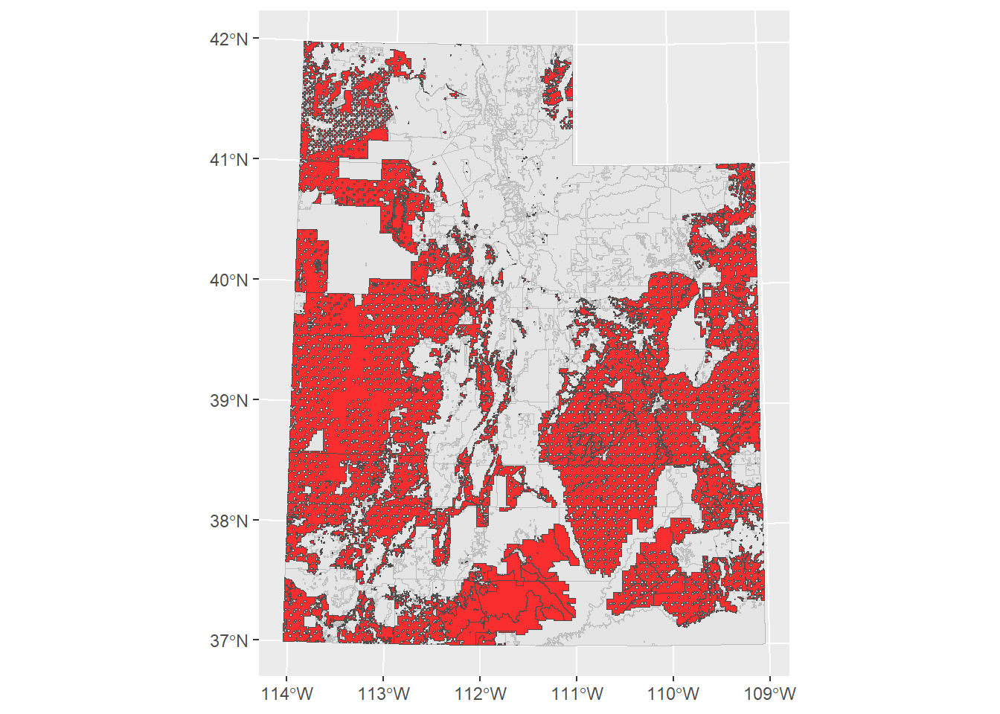
Using these functions, you can set up any logical statement using ==, %in%, >, >=, <, <=, or ! and select for the specific attributes you need.
4.2 Select features by location
Let’s make select the management boundaries based on if they are intersected by a major highway. For sf we’ll use the function st_intersect
ownership_roads <- st_intersects(interstate_sf_proj, ownership_sf) # the first argument is the target shape and the second argument the shape we're selecting from
class(ownership_roads)## [1] "sgbp" "list"The output is an sgbp object, or “Sparse Geometry Binary Predicate”. Basically it returns a list of vectors of integers, which refer to the indices of each polygon that intersects.
## [1] 1848 15197## [1] 1848## [1] 15197So the dimensions of this list are the the number of rows in the target shape (the highways) and the number of rows in the intersecting shape (the management boundaries).
Lets look at the first five elements of this list:
## [[1]]
## [1] 4687
##
## [[2]]
## [1] 6408
##
## [[3]]
## [1] 12997
##
## [[4]]
## [1] 6406
##
## [[5]]
## [1] 4687This means that the 1st row of the road polyline intersects with the 6459th row of the management polygon, the 2nd row of the road polyline intersects with the 6455th row of the management polygon, and etc.
If we wanted to know the specifc index of a specific road that intersected with a management boundary, it would be useful to keep all of these indices seperate. Since we just want to know which boundaries intersect a road, we can collapse this whole list together.
ownership_roads_index <- unique(unlist(ownership_roads)) # just pull the unique indices
ownership_roads_intersect <- ownership_sf[ownership_roads_index, ]
ggplot() +
geom_sf(data = ownership_sf, col = "grey", size = 0.1) +
geom_sf(data = ownership_roads_intersect, fill = "red", col = "grey30",
alpha = 0.8, size = 0.1) +
geom_sf(data = interstate_sf_proj, col = "black", size = 1)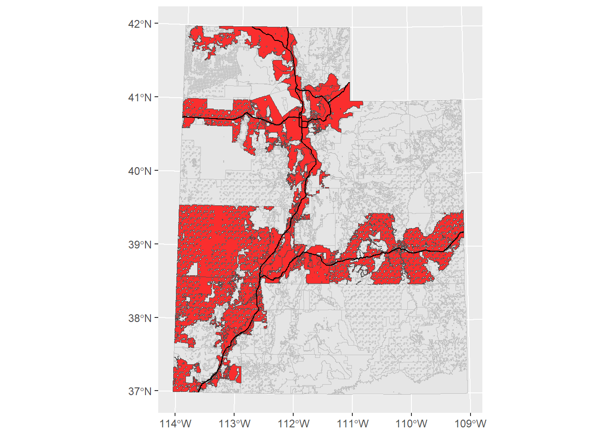
If you look at the help file for ?st_intersects, you’ll see there are a lot of different functions that select features based on another feature.
4.3 Joining Attributes
Let’s load in a table of some data collected at each plot
## Plots Species Date AboveGroundBiomass MeanHeight PercentCover
## 1 A R. maritimus 2021-05-01 20.597457 1.930570 82.09463
## 2 A B. cernua 2021-05-01 49.769924 2.410401 78.93562
## 3 A S. acutus 2021-05-01 93.470523 3.342334 47.76196
## 4 B R. maritimus 2021-05-02 9.946616 1.695365 20.26923
## 5 B B. cernua 2021-05-02 91.287592 4.460992 23.96294
## 6 B S. acutus 2021-05-02 25.801678 2.173297 79.73088Let’s join this table to the Plots feature so we could do some spatial analysis and mapping of the collected data. To join two tables together, we need to input the two tables and the name of the column that exists in both tables (so the join function knows how to match attributes together). In this case, that would be the Plots column.
## [1] "A" "B" "C" "D" "E" "F"## [1] "A" "A" "A" "B" "B" "B"We can use the tidyverse’s join functions. (If you don’t know how joins work, I would recommend looking at the help file by typing ?left_join in the console)
## Simple feature collection with 6 features and 6 fields
## Geometry type: POINT
## Dimension: XY
## Bounding box: xmin: -111.5881 ymin: 40.53102 xmax: -111.5881 ymax: 40.53102
## Geodetic CRS: WGS 84
## Plots Species Date AboveGroundBiomass MeanHeight PercentCover
## 1 A R. maritimus 2021-05-01 20.59746 1.93057046 82.09463
## 2 A B. cernua 2021-05-01 49.76992 2.41040058 78.93562
## 3 A S. acutus 2021-05-01 93.47052 3.34233369 47.76196
## 4 A R. maritimus 2021-05-08 17.65568 0.06695167 64.70602
## 5 A B. cernua 2021-05-08 71.76185 2.99782913 2.33312
## 6 A S. acutus 2021-05-08 21.21425 3.97119930 86.12095
## geometry
## 1 POINT (-111.5881 40.53102)
## 2 POINT (-111.5881 40.53102)
## 3 POINT (-111.5881 40.53102)
## 4 POINT (-111.5881 40.53102)
## 5 POINT (-111.5881 40.53102)
## 6 POINT (-111.5881 40.53102)Great! At this point you could then do some spatial analysis based on location, or make a map based on average biomass, for example. However, that’s outside the scope of this workshop.
Joining two tables together is a valuable tool to know, not just for GIS but for any data management.
4.4 Extract Raster Values
What if we need to get data from our rasters at our specific site locations? We can use the function extract().
Let’s load a landcover raster so we can classify the habitat types of our sites
## class : SpatRaster
## dimensions : 18675, 14838, 1 (nrow, ncol, nlyr)
## resolution : 30, 30 (x, y)
## extent : 229319.6, 674459.6, 4094414, 4654664 (xmin, xmax, ymin, ymax)
## coord. ref. : NAD83 / UTM zone 12N (EPSG:26912)
## source : landcover.tif
## name : landcover
## min value : 137
## max value : 584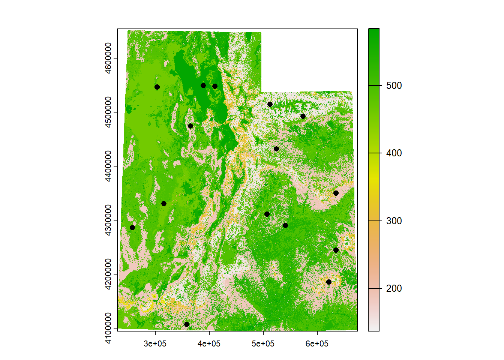
extract returns a vector whose indices match the indices of the spatial object. We could leave it as a vector, or we could automatically attach it to the dataframe using $
(Note that I put terra:: in front of extract(), that’s because there are multiple packages that have a function called extract(), so we want to specify to R which pacakage we want)
## Simple feature collection with 15 features and 2 fields
## Geometry type: POINT
## Dimension: XY
## Bounding box: xmin: 257254.9 ymin: 4106995 xmax: 634770.7 ymax: 4549014
## Projected CRS: NAD83 / UTM zone 12N
## First 10 features:
## Site geometry land_value
## 1 1 POINT (506648 4311112) 489
## 2 2 POINT (364889.8 4474182) 148
## 3 3 POINT (573146.4 4492646) 155
## 4 4 POINT (303202.3 4546515) 458
## 5 5 POINT (512358.1 4514704) 549
## 6 6 POINT (409973.3 4547926) 557
## 7 7 POINT (388759.4 4549014) 579
## 8 8 POINT (634770.7 4350035) 316
## 9 9 POINT (621249.6 4185280) 158
## 10 10 POINT (524421.3 4431743) 156Ok, but what do these numbers mean? Our landcover raster is a categorical raster, so these numbers aren’t actually real numbers but represent a habitat type. Fortunately we have a dataframe indicating what these numbers mean.
## Value ClassCode ClassName SubClassCode SubClassName
## 1 1 1 Forest & Woodland 1.A Tropical Forest & Woodland
## 2 2 1 Forest & Woodland 1.A Tropical Forest & Woodland
## 3 3 1 Forest & Woodland 1.A Tropical Forest & Woodland
## 4 4 1 Forest & Woodland 1.A Tropical Forest & Woodland
## 5 5 1 Forest & Woodland 1.A Tropical Forest & Woodland
## 6 6 1 Forest & Woodland 1.A Tropical Forest & WoodlandThe column “Value” corresponds to the cell value we extracted from the raster. We can use what we learned earlier how to join two tables together. In our previous example, the columns we used to join the tables together were named the same. In this case, they’re not: one is called “land_value” and one is called “Value”. We could rename them so that they match. But left_join() has a way of handling and matching columns, even if they’re not named the same. If we check ?left_join, in the “Arguments” section for by, it says “to join by different variables on x and y, use a named vector. For example, by = c("a" = "b") will match x$a to y$b.” So we just need to set by = c("land_value" = "Value")
sites_sf_land <- sites_sf_proj %>%
left_join(land_info, c("land_value" = "Value"))
head(sites_sf_land)[,1:6]## Simple feature collection with 6 features and 6 fields
## Geometry type: POINT
## Dimension: XY
## Bounding box: xmin: 303202.3 ymin: 4311112 xmax: 573146.4 ymax: 4547926
## Projected CRS: NAD83 / UTM zone 12N
## Site land_value ClassCode ClassName
## 1 1 489 3 Desert & Semi-Desert
## 2 2 148 1 Forest & Woodland
## 3 3 155 1 Forest & Woodland
## 4 4 458 2 Shrub & Herb Vegetation
## 5 5 549 4 Polar & High Montane Scrub, Grassland & Barrens
## 6 6 557 7 Agricultural & Developed Vegetation
## SubClassCode SubClassName geometry
## 1 3.B Cool Semi-Desert Scrub & Grassland POINT (506648 4311112)
## 2 1.B Temperate & Boreal Forest & Woodland POINT (364889.8 4474182)
## 3 1.B Temperate & Boreal Forest & Woodland POINT (573146.4 4492646)
## 4 2.C Shrub & Herb Wetland POINT (303202.3 4546515)
## 5 4.B Temperate Alpine to Polar Tundra POINT (512358.1 4514704)
## 6 7.B Herbaceous Agricultural Vegetation POINT (409973.3 4547926)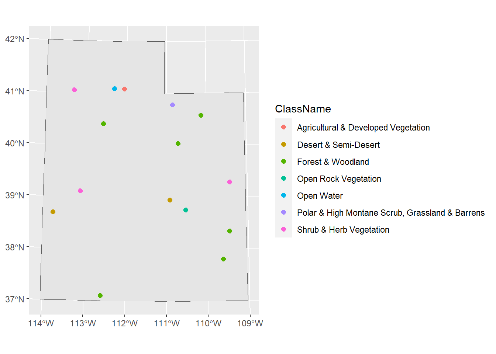
Awesome! Now we know what habitat each of our sites reside in.
4.5 Distance
Let’s say we needed to know how far from a major road each of our sites are. We’ll use the function st_distance for our sf objects. We simply need to input the focal feature (the sites) and the feature
## [1] 15 1848What did this do? Why are there so many columns? Remember that our Utah highways feature is a polyline, meaning it’s a line of lines. If we look at the dimensions of the highways feature:
## [1] 1848There are 1849 lines (i.e. roads) that make up this whole feature. So st_distance found the distance for each site (the number of rows) for every road (the number of columns). This could be useful information, but presumably we want just the distance of the closest road. Let’s first use st_nearest_feature to find the closest road to each of our sites.
## [1] 1101 1177 1384 799 1473 630 232 702 557 521 529 99 1430 15 557## Simple feature collection with 15 features and 9 fields
## Geometry type: LINESTRING
## Dimension: XY
## Bounding box: xmin: 282642.9 ymin: 4137639 xmax: 661451 ymax: 4555607
## Projected CRS: NAD83 / UTM zone 12N
## First 10 features:
## OBJECTID FULLNAME NAME POSTTYPE SPEED_LMT DOT_HWYNAM DOT_SRFTYP
## 1101 234986 I-70 WB FWY I-70 WB FWY 75 I-70 P
## 1177 248283 I-80 EB FWY I-80 EB FWY 75 I-80 P
## 1384 300050 I-80 EB FWY I-80 EB FWY 75 I-80 P
## 799 163766 I-80 WB FWY I-80 WB FWY 75 I-80 P
## 1473 320716 I-80 EB FWY I-80 EB FWY 65 I-80 P
## 630 130269 I-15 SB FWY I-15 SB FWY 70 I-15 P
## 232 45243 I-15 SB FWY I-15 SB FWY 70 I-15 P
## 702 143420 I-70 WB FWY I-70 WB FWY 75 I-70 P
## 557 117401 I-70 EB FWY I-70 EB FWY 75 I-70 P
## 521 108444 I-15 NB FWY I-15 NB FWY 65 I-15 P
## DOT_AADT UNIQUE_ID geometry
## 1101 NA 12SWJ07420079_I-70_WB_FWY LINESTRING (506862.7 430072...
## 1177 12000 12TUL77660482_I-80 EB_FWY LINESTRING (377489.8 450489...
## 1384 16000 12TVL86655323_I-80 EB_FWY LINESTRING (484274.7 455222...
## 799 NA 12TTL95291161_I-80 WB_FWY LINESTRING (282642.9 451236...
## 1473 15000 12TVL67382316_I-80 EB_FWY LINESTRING (465971.3 451778...
## 630 NA 12TVL499657376_I-15 SB_FWY LINESTRING (415374.9 455118...
## 232 NA 12TVL13925335_I-15 SB_FWY LINESTRING (414453.3 455253...
## 702 NA 12SXJ59523424_I-70 WB_FWY LINESTRING (657315.1 433125...
## 557 10000 12SXJ29161112_I-70 EB_FWY LINESTRING (620558.6 431124...
## 521 104000 12TVK44904321_I-15_NB_FWY LINESTRING (444841.6 444243...Now we have the indices of the roads that are closest to our sites, so we can find the distance of just these roads.
## Units: [m]
## [,1] [,2] [,3] [,4] [,5]
## [1,] 10315.51 232582.47 242147.42 281846.56 210641.52
## [2,] 224150.99 33194.84 142629.52 67810.07 110086.22
## [3,] 202785.29 195679.41 105586.36 265837.33 109558.50
## [4,] 319202.58 85153.11 181162.34 35259.29 164053.11
## [5,] 213951.35 134881.34 46277.52 204448.52 45475.54
## [6,] 265510.76 53802.73 74425.61 108507.81 59486.92
## [7,] 274946.67 45537.59 95569.24 89311.68 80131.79
## [8,] 136172.75 299925.04 251423.12 364314.12 237979.89
## [9,] 161631.44 401648.70 391502.51 451943.09 366979.12
## [10,] 132044.13 163762.97 126873.05 230529.64 104020.44
## [11,] 34586.77 269676.04 268322.22 321111.19 239842.61
## [12,] 250038.01 249684.87 349826.95 227716.46 311863.50
## [13,] 244382.54 398276.49 462818.09 407078.61 424773.11
## [14,] 193621.33 184870.40 278450.62 180463.52 240048.54
## [15,] 138475.56 365526.65 342070.17 421508.03 321034.17## [1] 15 15This is still giving us the distance of each road to each site but we just want the distance between each site and it’s nearest road. There’s an argument in st_distance() called by_element that tells st_distance() to only find the distance between the first elements of the two objects.
dist_near_road <- st_distance(sites_sf_proj, interstate_sf_proj[near_road,],
by_element = TRUE)
dist_near_road## Units: [m]
## [1] 10315.506 33194.842 105586.359 35259.292 45475.541 6297.237
## [7] 25526.749 29201.908 125931.670 80267.682 16154.905 102959.472
## [13] 65466.728 62646.964 65802.131There we go! Now we have the distance between each site and it’s nearest road. This output is a vector, so we can add it to our sites data frame with $ (or mutate() in tidyverse)
## Simple feature collection with 6 features and 3 fields
## Geometry type: POINT
## Dimension: XY
## Bounding box: xmin: 303202.3 ymin: 4311112 xmax: 573146.4 ymax: 4547926
## Projected CRS: NAD83 / UTM zone 12N
## Site geometry land_value dist_near_road
## 1 1 POINT (506648 4311112) 489 10315.506 [m]
## 2 2 POINT (364889.8 4474182) 148 33194.842 [m]
## 3 3 POINT (573146.4 4492646) 155 105586.359 [m]
## 4 4 POINT (303202.3 4546515) 458 35259.292 [m]
## 5 5 POINT (512358.1 4514704) 549 45475.541 [m]
## 6 6 POINT (409973.3 4547926) 557 6297.237 [m](Note that if you look at the help file i.e. ?st_distance, there are other functions to calculate geometric measurements for sf objects: st_area and st_length)
4.6 Calculate Terrain Characteristics
From a DEM (digital elevation model) we can obtain a lot of other rasters that are likely useful in GIS research. The elevation raster we’ve been working with is a DEM. From a DEM we can derive other terrain characteristics :
- Slope: Measurement of “steepness”
- Aspect: Measurements of “Northness” and “Eastness”
- Flow direction of water: the direction of the greatest drop in elevation
- Terrain Ruggedness Index (TRI): the mean of the absolute differences between the value of a cell and the value of its 8 surrounding cells
- Topographic Position Index (TPI): the difference between the value of a cell and the mean value of its 8 surrounding cells
- Roughness: the difference between the maximum and the minimum value of a cell and its 8 surrounding cells
These definitions came from the help file for the function we can use to derive these characteristics: terrain().
slope <- terrain(elev_snow_stk$elevation, v = "slope", unit = "radians")
aspect <- terrain(elev_snow_stk$elevation, v = "aspect", unit = "radians")
roughness <- terrain(elev_snow_stk$elevation, v = "roughness")
terrain_stk <- c(elev_snow_stk$elevation, slope, aspect, roughness)
terrain_stk## class : SpatRaster
## dimensions : 240, 240, 4 (nrow, ncol, nlyr)
## resolution : 0.008333333, 0.008333333 (x, y)
## extent : -112, -110, 40, 42 (xmin, xmax, ymin, ymax)
## coord. ref. : lon/lat WGS 84 (EPSG:4326)
## sources : elev_snow_nw_stack.tif
## memory
## memory
## memory
## names : elevation, slope, aspect, roughness
## min values : 1280.021, 0.0000000, 3.786645e-05, 0.000
## max values : 4087.231, 0.5922148, 6.283185e+00, 1305.816To compute the Northness or Eastness of a cell, we actually have to do one more step to the aspect raster. Aspect is a circular measurement (which is why its units are in degrees or radians), so (if you remember how trigonometry works) to calculate northness and eastness we need to use cosine and sine respectively. Because our units are in radians, we can simply apply the cos() and sin() functions directly to the aspect raster.
aspect_cos <- cos(terrain_stk$aspect)
aspect_sin <- sin(terrain_stk$aspect)
aspect_stk <- c(aspect_cos, aspect_sin)
names(aspect_stk) <- c("cosine_northness", "sine_eastness")
aspect_stk## class : SpatRaster
## dimensions : 240, 240, 2 (nrow, ncol, nlyr)
## resolution : 0.008333333, 0.008333333 (x, y)
## extent : -112, -110, 40, 42 (xmin, xmax, ymin, ymax)
## coord. ref. : lon/lat WGS 84 (EPSG:4326)
## source(s) : memory
## names : cosine_northness, sine_eastness
## min values : -1, -1
## max values : 1, 1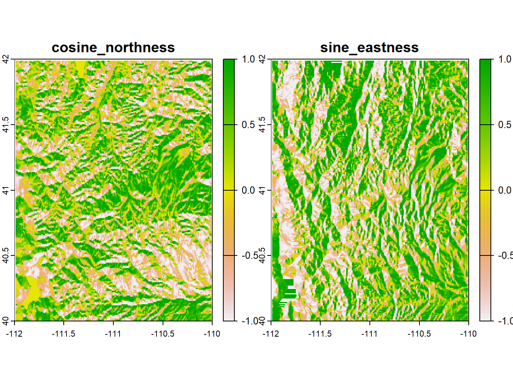
4.7 Re-Classify Rasters
Sometimes you may need to re-classify a raster. This means that you are assigning or changing raster cell values to new values. You may need to do this to
- replace values with new information
- group or bin specific values together
- set values to NA or set NA cells to a value
To re-classify a raster in R you use the aptly named function reclassify(). The arguments for reclassify are x (the Raster* object) and rcl (a matrix for reclassification)
Let’s practice. Let’s say we want to simplify our landcover raster and classify the cells into more general habitat classifications. Fortunately, the landcover data frame already has this information
## ClassCode ClassName
## 1 1 Forest & Woodland
## 116 2 Shrub & Herb Vegetation
## 299 3 Desert & Semi-Desert
## 489 4 Polar & High Montane Scrub, Grassland & Barrens
## 498 5 Aquatic Vegetation
## 503 6 Open Rock Vegetation
## 541 8 Nonvascular & Sparse Vascular Rock Vegetation
## 544 7 Agricultural & Developed Vegetation
## 547 9 Introduced & Semi Natural Vegetation
## 553 10 Recently Disturbed or Modified
## 565 11 Open Water
## 568 8 Developed & Other Human Use## Value ClassCode
## Min. : 1.0 Min. : 1.000
## 1st Qu.:144.8 1st Qu.: 1.000
## Median :293.5 Median : 2.000
## Mean :292.3 Mean : 2.257
## 3rd Qu.:440.2 3rd Qu.: 2.000
## Max. :584.0 Max. :11.000The “Value” column (the data representing the cell values of the landcover raster) has values from 1 to 584 to represent specific habitats within “Forest & Woodland” or “Desert & Semi-Desert” for example, while the “ClassCode” column only has values from 1 to 11 to represent these general habitat types. Much more simple.
So let’s take these two columns and make a matrix for the rcl argument in reclassify.
## Value ClassCode
## [1,] 1 1
## [2,] 2 1
## [3,] 3 1
## [4,] 4 1
## [5,] 5 1
## [6,] 6 1Now we just need to input this matrix and the landcover raster into the function.
## class : SpatRaster
## dimensions : 18675, 14838, 1 (nrow, ncol, nlyr)
## resolution : 30, 30 (x, y)
## extent : 229319.6, 674459.6, 4094414, 4654664 (xmin, xmax, ymin, ymax)
## coord. ref. : NAD83 / UTM zone 12N (EPSG:26912)
## source : landcover_rcl.tif
## name : landcover_rcl
## min value : 1
## max value : 11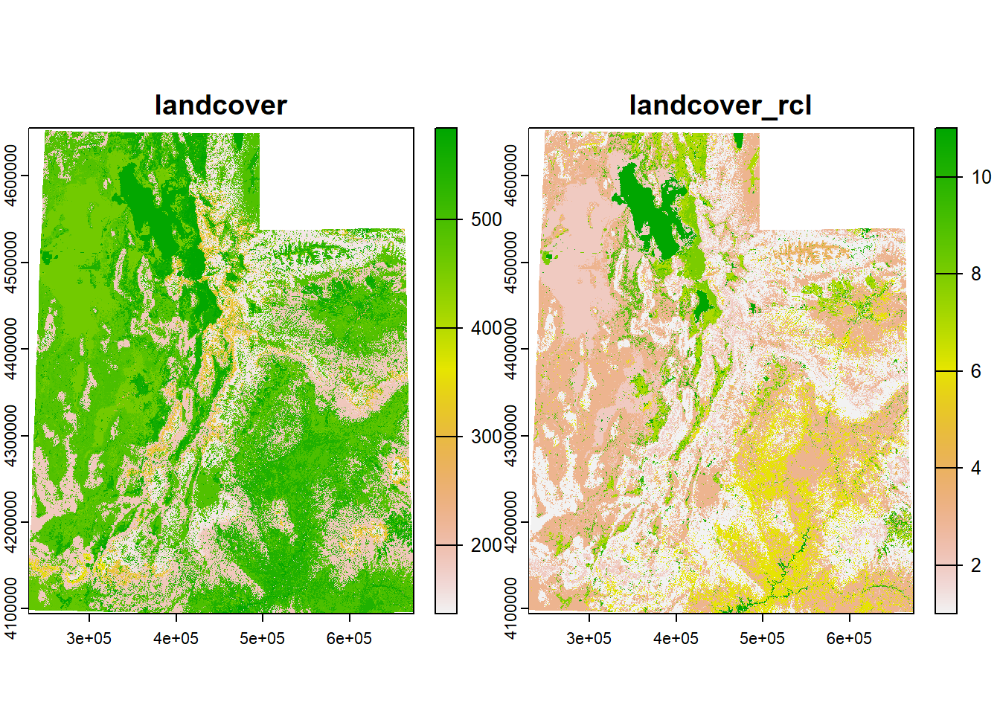
Great!
4.8 Raster Cell Stats
In my research I often have to perform cell algebra or focal statistics. Maybe you need to know the average elevation or the total herbaceous biomass within a certain area. The way to get these values are with the function cellStats. We simply need to input the raster and the stat function: sum, mean, min, max, sd, or a homemade function. Let’s say we need to calculate some stats of the elevation, SWE, and snow depth within a 5-km area around our sites.
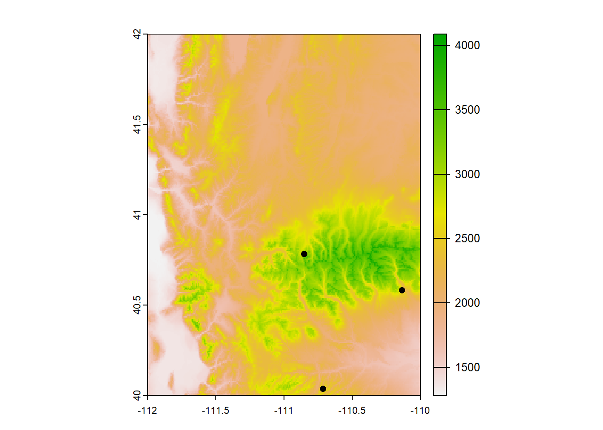
We need to know which of our sites are within the extent of the raster. There are probably many ways of doing this. The most straightforward way I can think of getting just the sites that fall within the raster are 1) extracting raster data at each site and 2) filtering to just the sites that have raster data attached.
sites_rast <- terra::extract(elev_snow_stk, sites_sf)
sites_rast # notice how only 3 rows (sites) have data## ID elevation swe snow_depth
## 1 1 NA NA NA
## 2 2 NA NA NA
## 3 3 2585.951 127 542
## 4 4 NA NA NA
## 5 5 3218.554 502 1640
## 6 6 NA NA NA
## 7 7 NA NA NA
## 8 8 NA NA NA
## 9 9 NA NA NA
## 10 10 2452.774 109 521
## 11 11 NA NA NA
## 12 12 NA NA NA
## 13 13 NA NA NA
## 14 14 NA NA NA
## 15 15 NA NA NA## Simple feature collection with 15 features and 4 fields
## Geometry type: POINT
## Dimension: XY
## Bounding box: xmin: -113.7909 ymin: 37.09849 xmax: -109.4373 ymax: 41.08479
## Geodetic CRS: WGS 84
## First 10 features:
## Site elevation swe snow_depth geometry
## 1 1 NA NA NA POINT (-110.9233 38.94893)
## 2 2 NA NA NA POINT (-112.5923 40.4073)
## 3 3 2585.951 127 542 POINT (-110.1357 40.58137)
## 4 4 NA NA NA POINT (-113.3415 41.04609)
## 5 5 3218.554 502 1640 POINT (-110.8535 40.78323)
## 6 6 NA NA NA POINT (-112.0717 41.07762)
## 7 7 NA NA NA POINT (-112.3244 41.08479)
## 8 8 NA NA NA POINT (-109.4373 39.28921)
## 9 9 NA NA NA POINT (-109.6226 37.80686)
## 10 10 2452.774 109 521 POINT (-110.7138 40.03556)sites_sf_rast <- sites_sf %>%
filter(!is.na(elevation) & !is.na(swe) & !is.na(snow_depth))
sites_sf_rast## Simple feature collection with 3 features and 4 fields
## Geometry type: POINT
## Dimension: XY
## Bounding box: xmin: -110.8535 ymin: 40.03556 xmax: -110.1357 ymax: 40.78323
## Geodetic CRS: WGS 84
## Site elevation swe snow_depth geometry
## 1 3 2585.951 127 542 POINT (-110.1357 40.58137)
## 2 5 3218.554 502 1640 POINT (-110.8535 40.78323)
## 3 10 2452.774 109 521 POINT (-110.7138 40.03556)Let’s just do this for one of our sites for now and then we can try it with the others.
First, we need to know which parts of this raster are within 5-km of the site, so we will need to crop the raster. We can do that by first making a buffer with st_buffer()
site_buff_5km <- st_buffer(site_sf_rast_01, 5000) # units are in meters, 1000m = 1km
plot(elev_snow_stk[[1]]) # let's just plot one layer for demonstration
plot(st_geometry(site_buff_5km), lwd = 1, add = T)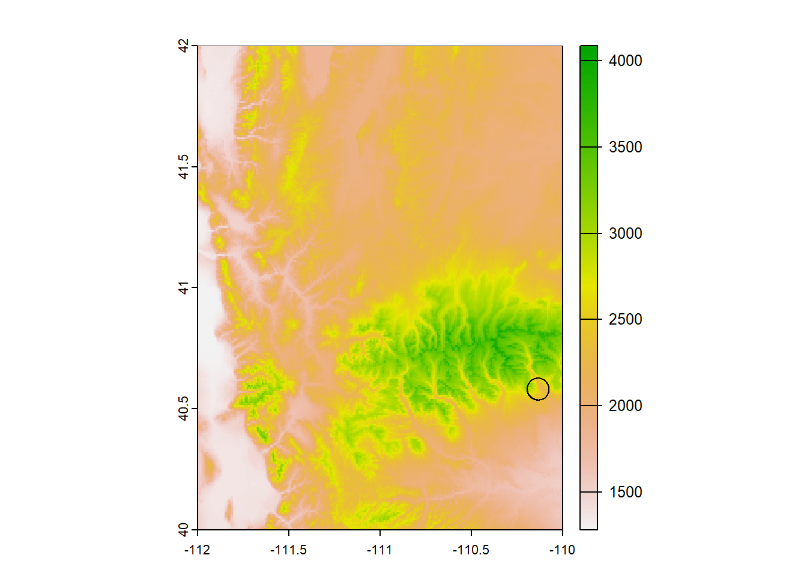
Now let’s crop the raster to this buffer’s extent. We’ll use the function crop(), which takes in the raster object we want to crop and an “extent object, or any object from which an Extent object can be extracted” (quoted from the crop help file). Because we can make an extent object from our buffer
## SpatExtent : -110.195356322096, -110.076232859429, 40.5357574438391, 40.626942424945 (xmin, xmax, ymin, ymax)We can input our buffer object directly into crop()
plot(stack_crop[[1]])
plot(st_geometry(site_buff_5km), add = T)
plot(st_geometry(site_sf_rast_01), pch = 16, add = T)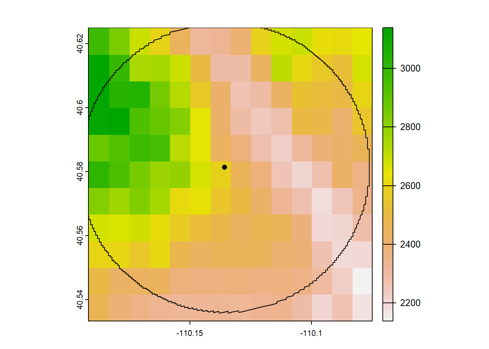
Great! Now let’s calculate the mean, median, min/max, and standard deviation of the elevation, SWE, and snow depth within this area.
stack_stats <- data.frame(
mean_5km = global(stack_crop, fun = "mean"),
min_5km = global(stack_crop, fun = "min"),
max_5km = global(stack_crop, fun = "max"),
sd_5km = global(stack_crop, fun = "sd"))
# let's add a column for the environment type from the raster and remove the row names
stack_stats$environment <- row.names(stack_stats)
row.names(stack_stats) <- NULL
stack_stats## mean min max sd environment
## 1 2522.8263 2138.969 3138.245 234.83332 elevation
## 2 140.4935 55.000 282.000 51.01483 swe
## 3 614.5195 284.000 1079.000 175.49777 snow_depthWe have our stats, but we want to join them with our sites data frame to make them more meaningful. We can’t use the function cbind() because the number of rows don’t match up. Instead, we can use dplyr’s function bind_cols(), which works just like cbind() or do.call(cbind, x) except that it’s a bit smarter and can add NAs if the number of rows or columns doesn’t match.
## Simple feature collection with 3 features and 9 fields
## Geometry type: POINT
## Dimension: XY
## Bounding box: xmin: -110.1357 ymin: 40.58137 xmax: -110.1357 ymax: 40.58137
## Geodetic CRS: WGS 84
## Site elevation swe snow_depth mean min max sd
## 1 3 2585.951 127 542 2522.8263 2138.969 3138.245 234.83332
## 2 3 2585.951 127 542 140.4935 55.000 282.000 51.01483
## 3 3 2585.951 127 542 614.5195 284.000 1079.000 175.49777
## environment geometry
## 1 elevation POINT (-110.1357 40.58137)
## 2 swe POINT (-110.1357 40.58137)
## 3 snow_depth POINT (-110.1357 40.58137)Great! But we only did this process for one site when presumabaly we would want these data for all available sites. We could copy and paste for each site, but that can get tedious, not to mention out of control if we had more than 3 sites. So the best way to do this would be with loops.
4.9 A Note About Loops
Learning all these functions is all well and good, but what if you have to perform them all on multiple features or rasters? Copying and pasting code over and over again can soon become confusing and messy and cause your code to be inefficient. The better way to address this is (in my opinion) with loops! for loops and lapply are lifesavers and I use them in all of my code. A future workshop will go into more depth on how to use loops (be on the lookout for that!), so I won’t go over them in too much detail. But I do want to show some ways you can use them for GIS applications.
(These code chunks are for demonstration only, these data and directories don’t actually exist)
# Example 1: Load a set of shapefiles and find the area for each
filenames <- list.files(dir) # get a list of shapefile names in a directory
area_list <- c() # create an empty vector for the areas to live in
for(i in 1:length(filenames)){
# load the shapefile
shp <- st_read(filenames[i])
# calculate the area
area <- st_area(shp)
# put the area into the vector
area_list <- c(area_list, area)
}
# -----------------------------------------------------------------------------X
# Example 2: Load a set of shapefiles, generate a buffer for each, and calculate the # mean value of a raster within that buffer and the focal feature
filenames <- list.files(dir) # get a list of shapefile names in a directory
r <- raster(raster_filename) # load a raster
lapply(filenames, function(fn){
# load a shapefile
shp <- st_read(fn)
# generate a 10kmX10km buffer
buffer <- st_buffer(shp, dist = 10000)
# crop the raster to the shape and the buffer
r_shp <- crop(r, extent(shp))
r_buffer <- crop(r, extent(buffer))
# calculate the mean value of the raster within the buffer and the feature
r_shp_mean <- cellStats(r_shp, stat = "mean", na.rm = TRUE)
r_buff_mean <- cellStats(r_shp, stat = "mean", na.rm = TRUE)
# return both means in a list
return(list(r_shp_mean, r_buff_mean))
})
# -----------------------------------------------------------------------------X
# Example 3: Generate a raster of the sum from a set of RasterStacks
# and then save the output raster
filenames <- list.files(dir) # get a list of raster files in a directory
out_names <- paste0(filenames, "_sum")
lapply(1:length(filenames), function(i){
# load RasterStak
stk <- stack(filenames[i])
# create a raster that is the sum of all layers in the stack
sum <- calc(stk, fun = sum)
sum <- sum(stk) # these two operations are equivalent
writeRaster(sum, out_names[i], format = "GTiff")
})
# -----------------------------------------------------------------------------X
# Example 4: Pull the number of zeros in a set of rasters
filenames <- list.files(dir) # get a list of raster files in a directory
lapply(filenames, function(fn){
# load raster
rast <- raster(fn)
# get the number of zeros in the raster
n_0 <- getValues(rast) == 0 %>%
which() %>%
length()
return(n_0)
})Even more efficient would be to run these in parallel, but that is way beyond the scope of this workshop
I hope these functions helped you! The next chapter goes over some ways of obtaining the data we worked on today.